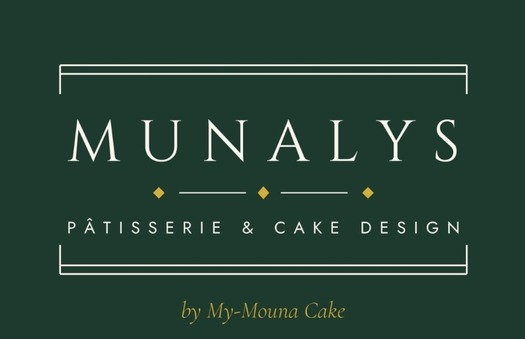

Madame l'Administratrice
Sphères ministérielles Ousmane Tanor Dieng
Bâtiment C — Diamniadio
Madame l'Administratrice,
Je me permets de vous écrire pour solliciter l'agrément de Munalys Sweet by My-Mouna Cake auprès du FONSTAB.
Mon atelier, installé à Ngor Almadies, prépare de la pâtisserie et du cake design pour les réceptions professionnelles et les cérémonies. Je réalise des pièces montées, des gâteaux personnalisés aux couleurs d'une institution ou d'un projet, des buffets sucrés et salés, ainsi que des coffrets à offrir.
Pour vos rencontres de travail, je peux assurer :
| Pauses-café et collations | ateliers, séminaires, sessions de formation |
| Buffets et cocktails | lancements, remises officielles, réceptions |
| Gâteaux et pièces montées | anniversaires d'institution, signatures de convention |
| Coffrets et dragées | cadeaux protocolaires, invités d'honneur |
Les commandes sont préparées dans mon atelier, livrées sur le lieu de la manifestation et dressées par mon équipe. Je travaille sur devis, et propose une dégustation préalable lorsque le volume le justifie.
Munalys Sweet by My-Mouna Cake est immatriculée au Registre du commerce sous le numéro SN DKR 2025 A 19114 et dispose du NINEA 012149698.
Vous trouverez ci-joint l'accusé d'immatriculation au registre du commerce et l'avis NINEA. Je me tiens à votre disposition pour vous présenter un échantillon de mes réalisations.
Je vous prie d'agréer, Madame l'Administratrice, l'assurance de ma considération respectueuse.